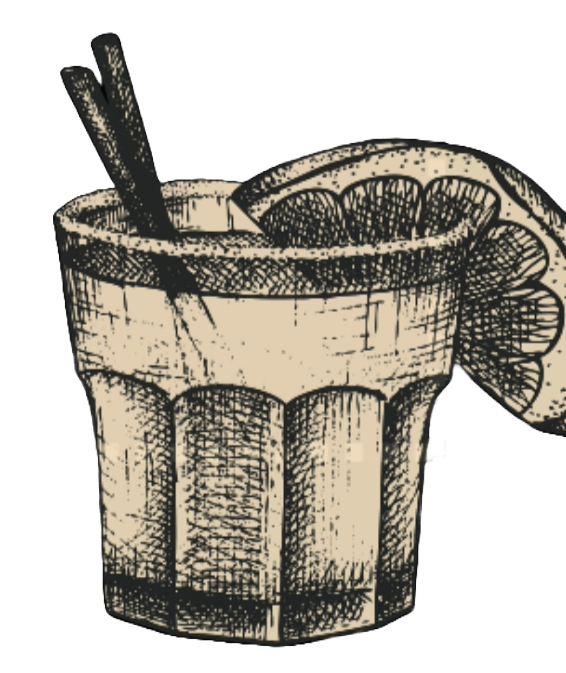
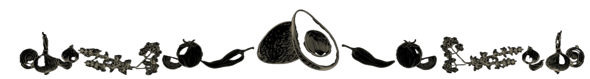

Chevron Right
Chevron Left
Française
English
Italiano
Home
Instagram
Review
TripAdvisor
Française
English
Italiano
Drink abbinati ToccaQui
Boissons assorties
Paloma
Fruité et rafraîchissant, c'est l'un des cocktails les plus populaires au Mexique.
Tequila, Citron vert, Soda au pamplemousse et bordure de sel
BATANGA
Créé en 1960 à La Capilla par Javier Delgato Corona
Une combinaison simple mais incroyable de Tequila, Citron vert, sel et Coca-Cola. Bordure de sel
MEXICO Y SPRITZ
Un Spritz différent qui marie le Mexique à notre Puglia.
Fruit de la passion, Bitter Orange, Aperol, Jus d'orange, Prosecco et Soda.

Entrées
MORCEAUX DE HABANERO (10 PCS)
Morceaux de habanero panés, garnis de fromage fondu crémeux.
MORCEAUX DE PORC (5 PCS)
Morceaux de porc effiloché avec sauce chipotle.
OIGNONS ET POIVRONS FRITS
Oignons rouges et poivrons panés et frits.
FRITES MEXAL
Frites avec une chapelure de maïs.
NACHOS MEXAL
Totopos de maïs croustillants, fromage fondu, maïs, piment jalapeño, pico de gallo, haricots, avocat coupé en dés et crème sure.
TOTOPOS
Triangles de maïs frits, accompagnés de salsa maison et de crème sure.
GUACAMOLE
Purée d'avocat, oignon blanc, jus de citron vert fraîchement pressé, piment jalapeño frais, tomate.
Accompagné de totopos de maïs croustillants.
RIZ BLANC
TORTILLAS
3 tortillas de blé.
